물류관리사-2교시 (2012-08-05 기출문제)
1과목: 보관하역론
1. 보관시스템의 주요 형태에 관한 설명으로 옳은 것은?
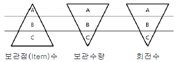
- A-A-C 형태는 보관점(Item)수는 적지만 보관수량이 많고 회전수가 큰 맥주, 청량음료, 시멘트 등 입출고가 빠른 물품으로 보관설비는 플로우 랙과 주행대차를 많이 이용하며 단시간에 대량처리가 가능한 형태이다.
- C-A-A 형태는 보관점(Item)수와 보관수량이 많고 회전수가 높아 관리가 매우 복잡한 형태로 고층 랙, 모노레일 및 스태커 크레인 등의 조합과 함께 컴퓨터 컨트롤 방식을 채용하면 운용효율을 높일 수 있다.
- A-A-C 형태는 회전수만 높은 제품으로 보관기능이 미약하기 때문에 중간 공정이나 출고 라인에서 피킹하는 제품에 적합한 형태이다.
- C-C-C 형태는 보관점(Item)수는 많지만 보관수량이 적고 이동이 많은 형태로 주로 고층 랙을 이용하며 개별출고방식에서 오더 피킹머신과 수동으로 피킹하기도 하는 형태이다.
- C-A-A 형태는 보관점(Item)수, 보관수량은 많지만 회전수가 적어 자동화 창고의 고층 랙에 모노레일 및 스태커 크레인 등을 이용하거나 파렛트 직접 쌓기 및 시프터와 로더가 한 조가 되는 기능의 하이쉬프트방식을 이용하는 형태이다.
(정답률: 알수없음)

2. 보관기능과 항목이 옳게 연결된 것은?
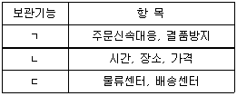
- ㄱ: 고객서비스 기능, ㄴ: 수급조정 기능, ㄷ: 모달쉬프트 기능
- ㄱ: 수급조정 기능, ㄴ: 물류거점적 기능, ㄷ: 고객서비스 기능
- ㄱ: 수급조정 기능, ㄴ: 고객서비스 기능, ㄷ: 물류거점적 기능
- ㄱ: 고객서비스 기능, ㄴ: 모달쉬프트 기능, ㄷ: 물류거점적 기능
- ㄱ: 고객서비스 기능, ㄴ: 수급조정 기능, ㄷ: 물류거점적 기능
(정답률: 알수없음)
3. 품목과 보관 랙 상호간에 특별한 연관관계를 정하지 않는 보관 방법은?
- 프리 로케이션(Free Location)
- 고정 로케이션(Fixed Location)
- 존 로케이션(Zone Location)
- 단순 로케이션(Simple Location)
- 복합 로케이션(Multi-Location)
(정답률: 알수없음)
4. 화차에 컨테이너를 싣는 COFC(Container On Flat Car)방식에 해당되는 것은?
- 피기 백(Piggy-Back) 방식, 캥거루 방식
- 캥거루 방식, 플랙시 밴(Flexi-Van)
- 크레인에 의한 방식, 피기 백 방식
- 프레이트 라이너(Freight Liner) 방식, 피기 백 방식
- 크레인에 의한 방식, 플랙시 밴
(정답률: 알수없음)
5. 화물의 권상, 권하, 횡방향 끌기 등의 목적을 위해 사용하는 장치의 총칭은?
- 엘리베이터(Elevator)
- 모노레일(Monorail)
- 호이스트(Hoist)
- 트롤리(Trolley)
- 포크 리프트(Fork Lift)
(정답률: 알수없음)
6. A물류센터의 입고 시 지게차는 도크에서 파렛트를 적재하여 보관지역으로 이동한 후 파렛트를 하역하고 다시 도크로 돌아온다. 이때 적재와 하역에 각각 1분씩 걸리며, 도크에서 보관지역까지의 거리는 50 m이고 지게차의 평균속도는 25 m/분 이다. 지게차는 하루에 8시간 작업하며 가동률은 0.9이다. 하루에 100대의 트럭이 도크에 도착하고 트럭당 10 개의 파렛트를 하역한다면 당일 도착 트럭의 짐을 모두 처리하기 위해서는 최소 몇 대의 지게차가 필요한가?
- 8 대
- 10 대
- 12 대
- 14 대
- 16 대
(정답률: 알수없음)
7. 파렛트 하역의 기대효과 중 옳지 않은 것은?
- 인건비 절감과 노동조건 향상
- 계절적 수요에 대응
- 화물훼손 감소로 상품보호
- 하역인원, 시간의 절감
- 하역단순화로 수송효율 향상
(정답률: 알수없음)
8. 용도에 따른 컨테이너 분류 중 온도관리가 가능한 화물수송용 컨테이너는?
- 서멀 컨테이너(Thermal Container)
- 드라이벌크 컨테이너(Dry Bulk Container)
- 오픈톱 컨테이너(Open Top Container)
- 플랫폼 컨테이너(Platform Container)
- 플랫 랙 컨테이너(Flat Rack Container)
(정답률: 알수없음)
9. 통로가 좁은 창고에서 장척화물을 취급하기에 가장 적합한 장비는?
- 스트래들(Straddle) 트럭
- 리치(Reach) 트럭
- 사이드로더(Sideloader) 트럭
- 튜렛(Turret) 트럭
- 플랫폼(Platform) 트럭
(정답률: 알수없음)
10. 자재보관을 위하여 사용되는 회전랙(Carousel)에 관한 설명으로 옳지 않은 것은?
- 랙이 작업자의 위치로 이동하므로 작업자의 이동을 최소화하는 방법이다.
- 회전랙은 수평형 회전랙(Horizontal Carousel)과 수직형 회전랙(Vertical Carousel)으로 구분할 수 있다.
- 일반적으로 수직형 회전랙은 수평형 회전랙보다 높은 천장이 필요하다.
- 일반적으로 수평형 회전랙이 수직형 회전랙보다 품목보호 및 보안성이 뛰어나다.
- 자동창고와 비교할때 도입비용이 저렴하여 소화물 자동창고(AS/RS)의 대안으로 사용된다.
(정답률: 알수없음)
11. 트렁크 룸(Trunk Room)에 관한 설명으로 옳지 않은 것은?
- 개인이나 기업을 대상으로 의류, 골동품, 서류, 자기테이프 등을 주로 보관하는 영업 창고이다.
- 창고의 공간을 세분하여 소단위의 화물을 위탁 보관한다.
- 물품을 해충, 곰팡이, 습기 등으로 부터 지키기 위해 항온ㆍ항습 서비스를 부가하여 보관한다.
- 물품을 적시에 간편하고도 신속하게 배송하기 위해 대체로 도심과 인접한 곳에 입지한다.
- 화물의 입출고, 저장, 물품선별 및 분류작업 등이 기계화ㆍ전산화를 통해 자동화되어 있다.
(정답률: 알수없음)
12. 10 개의 통로로 구성된 자동창고에서 각 통로 마다 한 대의 스태커크레인이 파렛트에 실린 화물을 운반한다. 전체 작업 중 이중명령으로 수행하는 작업이 50 %, 단일명령으로 수행하는 작업이 50 %이다. 스태커크레인이 단일명령을 실행하는 시간은 평균 5 분, 이중명령을 실행하는 시간은 평균 7 분이다. 스태커크레인의 효율이 100 %라면 이 자동창고에서 시간당 운반할 수 있는 파렛트는 몇 개인가?
- 120 개
- 150 개
- 180 개
- 210 개
- 240 개
(정답률: 알수없음)
13. 화물의 취급표시(화인) 방법이 올바르게 연결된 것은?
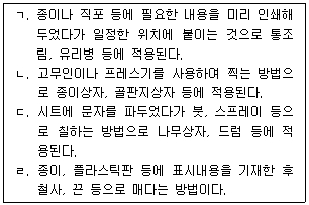
- ㄱ: 스탬핑(Stamping), ㄴ: 라벨링(Labeling), ㄷ: 스텐실(Stencil), ㄹ: 스티커(Sticker)
- ㄱ: 스탬핑(Stamping), ㄴ: 라벨링(Labeling), ㄷ: 스텐실(Stencil), ㄹ: 태그(Tag)
- ㄱ: 라벨링(Labeling), ㄴ: 스탬핑(Stamping), ㄷ: 스텐실(Stencil), ㄹ: 스티커(Sticker)
- ㄱ: 라벨링(Labeling), ㄴ: 스탬핑(Stamping), ㄷ: 스텐실(Stencil), ㄹ: 태그(Tag)
- ㄱ: 라벨링(Labeling), ㄴ: 카빙(Carving), ㄷ: 스텐실(Stencil), ㄹ: 태그(Tag)
(정답률: 알수없음)
14. 포장의 기능에 관한 설명으로 옳지 않은 것은?
- 내용물의 보호 및 보존기능은 물류활동 중 발생할 수 있는 변질, 파손, 도난 및 기타 위험으로부터 내용물을 안전하게 보호 및 보존하는 기능이다.
- 판매의 촉진성 기능은 포장을 차별화시키고 상품의 이미지 가치를 상승시켜 소비자로부터 구매의욕을 일으키게 하는 기능이다.
- 상품성 및 정보성 기능은 제품 내용을 소비자에게 전달하기 위해 필요한 정보를 표시하는 기능이다.
- 사회성과 환경친화성 기능은 공익성 및 환경 친화적인 요소를 고려하는 기능이다.
- 유통합리화와 경제성 기능은 제품의 운송, 보관, 하역, 판매, 소비되는 과정에서 취급을 편리하게 하는 기능이다.
(정답률: 알수없음)
15. 주문 품목을 피킹한 후 재분류 작업이 필요없는 피킹 방식은?
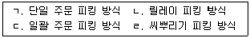
- ㄱ, ㄴ
- ㄱ, ㄷ
- ㄴ, ㄷ
- ㄴ, ㄹ
- ㄷ, ㄹ
(정답률: 알수없음)
16. 보관용 랙 중 물품의 선입선출이 가장 용이한 것은?
- 파렛트(Pallet) 랙
- 암(Arm) 랙
- 드라이브인(Drive-in) 랙
- 바(Bar) 랙
- 플로우(Flow) 랙
(정답률: 알수없음)
17. C기업에서는 주문 시 리드타임(Lead Time)이 5일이고, 안전재고가 50개, 연간 총 판매량이 5,000 개인 제품을 취급하고 있다. 연간 영업일수가 250일인 경우 재주문점(ROP)은?
- 150 개
- 250 개
- 500 개
- 750 개
- 900 개
(정답률: 알수없음)
18. 아래 표는 작업순서를 결정해야 하는 작업에 대한 자료이다. 8월 5일에 FCFS(First Come First Served), EDD(Earliest Due Date), SPT(Shortest Process Time) 규칙을 적용하여 작업순서를 결정할 때 올바르게 연결된 것은?
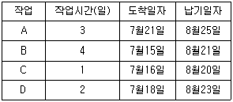
- FCFS: B-C-D-A, EDD: A-D-B-C, SPT: C-D-A-B
- FCFS: C-D-A-B, EDD: C-B-D-A, SPT: B-C-D-A
- FCFS: A-D-C-B, EDD: A-D-B-C, SPT: B-A-D-C
- FCFS: B-C-D-A, EDD: C-B-D-A, SPT: C-D-A-B
- FCFS: C-B-D-A, EDD: C-D-A-B, SPT: B-C-D-A
(정답률: 55%)
19. 분산구매에 관한 설명으로 옳지 않은 것은?
- 절차가 복잡한 구매에 유리하다.
- 긴급 수요가 발생할 때 신속히 대응할 수 있다.
- 거래업자가 사업장으로부터 근거리일 경우 경비가 절감된다.
- 사업장의 특수요구를 반영 할 수 있다.
- 사업장에서 자율적으로 구매한다.
(정답률: 알수없음)
20. 내륙컨테이너기지(ICD)의 기능에 해당되지 않는 것은?
- 수출입 통관업무
- 선박 적하, 양하기능
- 집화, 분류기능
- 장치, 보관기능
- 육상운송 수단과의 연계기능
(정답률: 알수없음)
21. 크로스도킹(Cross-docking)에 관한 설명으로 옳은 것을 모두 고른 것은?
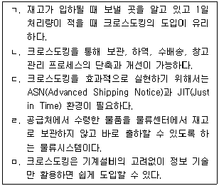
- ㄱ, ㄴ, ㄷ
- ㄱ, ㄷ, ㄹ
- ㄴ, ㄷ, ㄹ
- ㄴ, ㄷ, ㅁ
- ㄷ, ㄹ, ㅁ
(정답률: 알수없음)
22. 배송센터 구축의 이점이 아닌 것은?
- 교차수송의 실현
- 납품작업의 합리화
- 수송비 절감
- 배송서비스율의 향상
- 상물분리의 실시
(정답률: 알수없음)
23. 아래와 같은 조건일 때 요구되는 트럭 도크(Dock)의 수는?
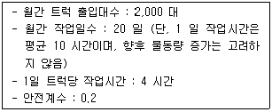
- 40 개
- 44 개
- 48 개
- 52 개
- 56 개
(정답률: 알수없음)
24. 물류센터에서 보관중인 제품을 고객의 발주내역에 따라 출하준비를 하는 물류활동은?
- Just in Time
- Order Picking
- Cross-docking
- Mezzanine Rack
- Receipt Management
(정답률: 알수없음)
25. 블록 트레인(Block Train)에 관한 설명으로 옳지 않은 것은?
- 물동량이 충분하고 조차장이 작은 경우에 적합하다.
- 고객맞춤형 직통 컨테이너화차 방식이다.
- 출발역으로부터 도착역까지 직송서비스를 제공한다.
- 일반 철도운송보다 운송시간 단축에 유리하고 녹색물류에 적합하다.
- 루프형 구간 서비스로 단거리 수송에 유리하다.
(정답률: 알수없음)
26. 기업소모성자재(MRO) 구매에 대한 설명으로 옳은 것은?
- 생산 활동과 직접 관련되는 원자재가 주 구매품목이다.
- 구매 대상 품목은 표준화되기 어렵다.
- 정보기술과 전자상거래의 발달로 영역이 확대되고 있다.
- MRO는 Main Resource Operation의 약어이다.
- 대행 구매보다 수요 부서의 직접 구매가 유리하다.
(정답률: 알수없음)
27. 다음( )안에 들어갈 적당한 용어는?
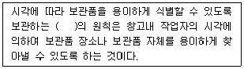
- 선입선출
- 형상 특성
- 회전대응 보관
- 명료성
- 네트워크 보관
(정답률: 알수없음)
28. 수요의 불확실성에 대처하기 위한 방법 중 하나로 제품의 완성을 뒤로 미루어 물류센터에서 출고 직전에 간단한 조립이나 패키징을 하는 것은?
- ATP(Available to Promise)
- VMI(Vendor Managed Inventory)
- Cross-docking
- Postponement
- SAM(Sales Agent Model)
(정답률: 알수없음)
29. 새로운 보관시설의 입지를 결정하려는데 다음과 같은 데이터를 활용한다. 무게중심법에 따른 적합한 입지장소는? (단, 소수점이하 반올림 함)
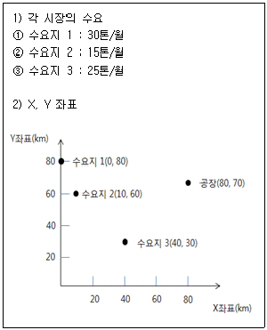
- (34, 58)
- (58, 48)
- (64, 58)
- (48, 64)
- (34, 64)
(정답률: 알수없음)
30. 컨테이너야드(CY)에서 사용하는 장비가 아닌 것은?
- 탑핸들러(Top Handler)
- 리치스태커(Reach Stacker)
- 트렌스테이너크레인(Transtainer Crane)
- 스트레들케리어(Straddle Carrier)
- 타워크레인(Tower Crane)
(정답률: 알수없음)
31. S물류센터는 그림과 같이 1개 구역에 100개의 파렛트를 보관할 수 있는 정방형 동일 크기의 9 개 구역을 가지고 있다. 보관하게 될 물품별 주당 입고 파렛트 수, 주당 입고 빈도수, 주문당 출고 파렛트 수에 대한 자료는 다음 표와 같으며, 주당 입고된 파렛트는 그 주에 모두 출하한다. 입출고 빈도를 고려하여 구역별로 가장 효율적인 보관 위치를 표시한 것은? (단, 물품은 지정위치 저장방식으로 보관하며 이동거리는 직각거리를 적용한다.)
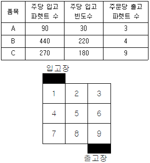
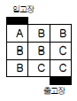
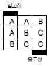
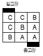
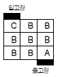
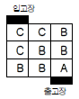
(정답률: 알수없음)
32. 동일한 조건하에서 배송센터의 수가 늘어나는 경우에 관한 설명으로 옳은 것은?
- 배송센터에서 배송처까지의 수송비용은 증가한다.
- 전체 배송센터의 재고수준은 증가한다.
- 전체 배송센터의 운영비용은 감소한다.
- 납기준수율은 감소한다.
- 고객 대응시간은 증가한다.
(정답률: 알수없음)
33. 포장재로 사용되는 골판지의 골 규격 중 단위 길이 당 골의 수가 가장 적고 골의 높이가 가장 높아 비교적 가벼운 내용물의 포장에 사용되는 것은?
- A 골
- B 골
- C 골
- E 골
- F 골
(정답률: 알수없음)
34. 영업창고의 특징으로 옳지 않은 것은?
- 시장환경의 변화에 따라 입지장소를 수시로 변경할 수 있다.
- 보관이나 하역에 따른 비용지출이 명확하여 진다.
- 자사품목에 적합한 창고 설계가 용이하다.
- 창고공간을 필요한 만큼 탄력적으로 사용하는 것이 가능하다.
- 보관품목 특성에 맞는 하역기기를 갖춘 창고선택으로 신속한 창고내 작업을 기대할 수 있다.
(정답률: 알수없음)
35. 기업의 자동창고 도입배경에 관한 설명으로 옳지 않은 것은?
- 인력절감의 효과가 기대된다.
- 소품종 대량주문의 대응과 배송의 신속화가 요구된다.
- 토지사용 효율성의 증대를 기대할 수 있다.
- 지가 상승으로 인한 고층의 입체 자동화 창고가 필요하다.
- 제조부문의 자동화와 균형을 맞출 수 있다.
(정답률: 알수없음)
36. MH(Material Handling) 작업을 개선하기 위한 방안으로 옳지 않은 것은?
- 공급선을 다변화한다.
- 화물을 적정한 크기로 단위화한다.
- 작업시간의 변동을 줄인다.
- 크로스도킹을 구현한다
- 수작업을 기계화한다.
(정답률: 알수없음)
37. A사의 작업시간에 관한 자료가 다음과 같을 때 입하작업공수(工數)비율과 가동률은?
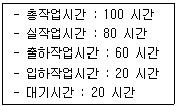
- 입하작업공수비율: 20%, 가동률: 33%
- 입하작업공수비율: 20%, 가동률: 80%
- 입하작업공수비율: 33%, 가동률: 60%
- 입하작업공수비율: 50%, 가동률: 80%
- 입하작업공수비율: 60%, 가동률: 33%
(정답률: 20%)
38. 어느 공장에서는 A부품을 연간 1,000,000개 납품하고 있다. 이를 위한 회당 생산 준비비용은 200 원이고 연간 단위당 재고유지비용은 100 원이다. 공장의 생산능력이 무한대라고 가정할 때 경제적 생산량(EPQ)은? (단, √2 = 1.414, √3 = 1.732, √4 = 2, √5 = 2.236)
- 약 1,400 개
- 약 1,700 개
- 약 2,000 개
- 약 2,200 개
- 약 3,400 개
(정답률: 알수없음)
39. B사에서 생산하는 제품은 사이클타임이 2시간, 1 일 생산량이 200 개이다. 1 일 10 시간 작업을 한다면 공정중 재고(In-process Inventory)는 몇 개인가?
- 10 개
- 20 개
- 30 개
- 40 개
- 50 개
(정답률: 알수없음)
40. 어떤 제품의 연간수요는 100,000개, 1회 주문비용은 20,000원, 개당 주문단가는 100원, 개당 연간 재고유지비용은 주문단가의 10% 이다. 경제적 주문량(EOQ)을 이용하여 재고보충을 한다면 이 품목의 재고회전율은?
- 5
- 8
- 10
- 12
- 14
(정답률: 알수없음)
2과목: 물류관련법규
41. 물류정책기본법령상 국가물류기본계획에 포함되어야 하는 사항이 아닌 것은?
- 물류인력의 양성 및 물류기술개발에 관한 사항
- 물류표준화ㆍ공동화ㆍ정보화 등 물류체계의 효율화에 관한 사항
- 지역 물류산업의 경쟁력 강화에 관한 사항
- 국제물류의 촉진ㆍ지원에 관한 사항
- 국내외 물류환경의 변화와 전망
(정답률: 알수없음)
42. 물류정책기본법령상 국가 또는 지방자치단체가 다른 물류기업에 우선하여 지원할 수 있는 인증종합물류기업의 사업이 아닌 것은?
- 물류시설의 확충
- 물류시설의 무상임대
- 첨단물류기술의 개발 및 적용
- 해외시장의 개척
- 물류공동화
(정답률: 알수없음)
43. 물류정책기본법령상 등록, 인증, 자격 및 지정의 취소에 관한 설명으로 옳지 않은 것은?
- 국토해양부장관은 국제물류주선업자가 다른 사람에게 자기의 성명 또는 상호를 사용하여 영업을 하게 하거나 등록증을 대여한 때에는 그 등록을 취소하여야 한다.
- 주무부장관은 인증종합물류기업이 거짓이나 그 밖의 부정한 방법으로 인증을 받은 때에는 그 인증을 취소하여야 한다.
- 주무부장관은 인증종합물류기업이 다른 사람에게 자기의 성명 또는 상호를 사용하여 영업을 하게 하거나 인증서를 대여한 때에는 그 인증을 취소할 수 있다,
- 국토해양부장관은 물류관리사가 다른 사람에게 자기의 성명을 사용하여 영업을 하게 하거나 자격증을 대여한 때에는 그 자격을 취소할 수 있다.
- 국토해양부장관은 종합물류기업 인증센터가 다른 사람에게 자기의 성명을 사용하여 인증요건을 심사하게 하거나 인증요건의 유지여부를 점검하게 한 때에는 그 지정을 취소하여야 한다.
(정답률: 알수없음)
44. 물류정책기본법령상 국토해양부장관이 행정적ㆍ재정적 지원을 할 수 있도록 명시되어 있는 경우가 아닌 것은?
- 물류기업의 환경친화적 운송수단의 사용
- 물류기업의 국제물류활동 촉진
- 민ㆍ관 합동 물류지원센터의 효율적 운영
- 물류관련사업자의 경영지도사 고용
- 물류기업의 물류 관련 신기술ㆍ기법의 도입ㆍ적용
(정답률: 알수없음)
45. 물류정책기본법령상 국토해양부장관이 필요한 경비의 전부 또는 일부를 지원할 수 있는 물류 인력의 역량강화를 위한 교육ㆍ연수 사업수행 기관으로 명시되어 있는 기관이 아닌 것은?
- 물류관련협회가 설립한 교육ㆍ훈련기관
- 고등교육법에 따라 설립된 대학이나 대학원
- 국제물류주선업자의 사내연수원
- 대한무역투자진흥공사법에 따른 대한무역투자진흥공사
- 화물자동차 운수사업법에 따라 화물자동차운수사업자가 설립한 협회
(정답률: 알수없음)
46. 물류정책기본법령상 물류사업의 범위 중 화물운송업에 해당하지 않는 것은?
- 항만운송사업
- 해상화물운송업
- 육상화물운송업
- 항공화물운송업
- 파이프라인운송업
(정답률: 알수없음)
47. 물류정책기본법령상 취소처분을 하기 위하여 청문을 실시하여야 하는 경우로 옳은 것을 모두 고른 것은?
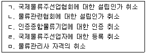
- ㄱ, ㄴ, ㄷ
- ㄱ, ㄴ, ㅁ
- ㄴ, ㄷ, ㄹ
- ㄴ, ㄷ, ㅁ
- ㄷ, ㄹ, ㅁ
(정답률: 알수없음)
48. 물류정책기본법령상 국제물류주선업자의 규정 위반에 관한 제재의 내용으로 옳지 않은 것은? (단, 가감은 고려하지 않음)
- 사업의 휴지ㆍ폐지의 신고를 하지 아니한 때에는 100만원의 과태료
- 변경등록을 하지 아니하고 등록한 사항을 변경한 때에는 1천만원 이하의 벌금
- 국제물류주선업의 등록을 하지 아니하고 사업을 경영한 때에는 3년 이하의 징역 또는 5천만원 이하의 벌금
- 사업정지처분에 갈음하는 경우에는 200만원의 과징금
- 국제물류주선업의 등록에 따른 권리ㆍ의무의 승계를 신고하지 아니한 때에는 150만원의 과태료
(정답률: 알수없음)
49. 물류시설의 개발 및 운영에 관한 법령상 물류시설에 해당하지 않는 것은?
- 화물의 운송ㆍ보관ㆍ하역을 위한 시설
- 화물의 운송ㆍ보관ㆍ하역과 관련된 가공ㆍ포장을 위한 시설
- 물류의 공동화를 위한 시설
- 물류의 정보화를 위한 시설
- 물품의 제조를 위한 시설
(정답률: 알수없음)
50. 물류시설의 개발 및 운영에 관한 법령상 복합물류터미널사업자의 등록을 반드시 취소하여야 하는 경우가 아닌 것은?
- 거짓이나 그 밖의 부정한 방법으로 등록을 한 때
- 복합물류터미널사업 등록의 취소처분을 받은 후 2년이 지나지 아니한 자에 해당하게 된 때
- 다른 사람에게 자기의 성명 또는 상호를 사용하여 사업을 하게 하거나 등록증을 대여한 때
- 사업정지명령을 위반하여 그 사업정지기간 중에 영업을 한 때
- 사업의 전부 또는 일부를 휴업한 후 정당한 사유 없이 신고한 휴업기간이 지난 후에도 사업을 재개하지 아니한 때
(정답률: 알수없음)
51. 물류시설의 개발 및 운영에 관한 법령상 물류시설개발종합계획의 수립에 관한 설명으로 옳지 않은 것은?
- 국토해양부장관은 물류시설개발종합계획을 효율적으로 수립하기 위하여 필요하다고 인정하는 때에는 물류정책기본법의 관련 규정을 준용하여 물류시설에 대하여 조사할 수 있다.
- 국토해양부장관은 물류시설개발종합계획 중 물류시설별 물류시설용지면적의 100분의 10 이상으로 물류시설의 수요ㆍ공급계획을 변경하려는 때에는 물류시설개발종합계획을 수립하는 때와 동일한 절차를 거쳐야 한다.
- 국토해양부장관은 물류시설개발종합계획을 수립한 때에는 이를 관보에 고시하여야 한다.
- 국토해양부장관은 물류시설의 합리적 개발ㆍ배치 및 물류체계의 효율화 등을 위하여 물류시설개발종합계획을 10년 단위로 수립하여야 한다.
- 물류시설개발종합계획은 물류정책기본법에 따른 국가물류기본계획과 조화를 이루어야 한다.
(정답률: 알수없음)
52. 물류시설의 개발 및 운영에 관한 법령상 복합물류터미널사업의 등록기준에 해당하지 않는 것은?
- 해당 지역 운송망의 중심지에 위치하여 다른 교통수단과 쉽게 연결될 것
- 부지 면적이 3천 3백 제곱미터 이상일 것
- 화물취급장을 갖출 것
- 주차장을 갖출 것
- 창고 또는 배송센터를 갖출 것
(정답률: 알수없음)
53. 물류시설의 개발 및 운영에 관한 법령상 국가 또는 지방자치단체가 소요자금의 일부를 융자하거나 부지의 확보를 위한 지원을 할 수 있는 물류터미널사업자의 사업에 해당하지 않는 것은?
- 물류터미널의 건설
- 물류터미널 위치의 변경
- 물류터미널 구조의 개선
- 물류인력에 대한 자체 교육ㆍ연수
- 물류터미널 설비의 개선
(정답률: 알수없음)
54. 물류시설의 개발 및 운영에 관한 법령상 물류터미널에 관한 설명으로 옳지 않은 것은?
- 가공ㆍ조립시설이 있는 물류시설이 물류터미널에 해당하기 위해서는 그 가공ㆍ조립시설의 전체 바닥면적 합계가 물류터미널의 전체 바닥 면적 합계의 4분의 1 이하이어야 한다.
- 민법에 따라 설립된 법인도 복합물류터미널사업을 경영하기 위하여 등록을 할 수 있다.
- 유통산업발전법에 따른 집배송시설 및 공동집배송센터를 경영하는 사업은 물류터미널사업에 해당한다.
- 복합물류터미널사업을 경영하려는 법인은 그 임원 중에 파산선고를 받고 복권되지 아니한 자가 있는 경우 등록을 할 수 없다.
- 물류시설의 개발 및 운영에 관한 법률을 위반하여 벌금형 이상을 선고받은 후 2년이 지나지 아니한 자는 복합물류터미널사업의 등록을 할 수 없다.
(정답률: 알수없음)
55. 물류시설의 개발 및 운영에 관한 법령상 물류터미널사업자가 국토의 계획 및 이용에 관한 법률에 따른 도시ㆍ군계획시설에 해당하는 물류터미널을 건설하는 경우에 관한 설명으로 옳은 것은?
- 물류터미널사업자는 필요한 토지ㆍ건축물 또는 토지에 정착한 물건을 수용할 수 있으나, 소유권 외의 권리는 수용할 수 없다.
- 물류터미널사업자는 물류터미널의 건설을 위하여 필요한 때에는 다른 사람의 토지에 출입하거나 이를 일시 사용할 수 있으나, 나무 또는 토석은 제거할 수 없다.
- 국가 또는 지방자치단체는 그 소유의 재산이 물류터미널을 건설하기 위한 부지 안에 있더라도, 이 재산을 물류터미널사업자에게 수의 계약으로 매각할 수 없다.
- 물류터미널을 건설하기 위한 부지 안에 있는 국가 또는 지방자치단체 소유의 토지로서 물류터미널 건설사업에 필요한 토지는 해당 물류터미널 건설사업 목적이 아닌 다른 목적으로 매각할 수 없다.
- 물류터미널사업자는 물류터미널의 건설을 위한 이주대책에 관한 업무를 직접 수행하여야 하며, 이를 위탁할 수 없다.
(정답률: 알수없음)
56. 물류시설의 개발 및 운영에 관한 법령상 이행 강제금 등에 관한 설명으로 옳지 않은 것은?
- 물류단지 입주기업체 또는 지원기관은 관련 법령에서 정하는 정당한 사유가 없는 경우에는 시행자와 분양계약을 체결한 날부터 2년 안에 그 물류단지시설 또는 지원시설의 건설공사에 착수하거나 토지ㆍ시설 등을 처분하여야 한다.
- 물류단지지정권자는 물류단지시설 등 건설공사 착수 등의 의무를 이행하지 아니한 입주기업체 또는 지원기관에 대하여 의무이행기간이 끝난 날부터 1년이 경과한 날까지 그 의무를 이행할 것을 명하여야 한다.
- 부과할 수 있는 이행강제금은 해당 토지ㆍ시설 등 재산가액의 100분의 20에 해당하는 금액이다.
- 물류단지지정권자는 매년 1회 그 의무가 이행될 때까지 반복하여 이행강제금을 부과하고 징수할 수 있다.
- 물류단지지정권자는 물류단지시설 등의 건설공사 착수 등 의무가 있는 자가 그 의무를 이행한 경우에는 새로운 이행강제금의 부과를 중지하되, 이미 부과된 이행강제금은 징수하여야 한다.
(정답률: 알수없음)
57. 화물자동차 운수사업법령상 운송사업자에 관한 설명으로 옳은 것은?
- 운송사업자는 운임과 요금을 정하여 국토해양부장관에게 인가를 받아야 한다.
- 운송사업자는 운송약관을 정하여 국토해양부장관에게 신고하여야 한다.
- 운송사업자가 상호를 변경하는 경우 국토해양부장관에게 변경허가를 받아야 한다.
- 화물자동차 운송사업을 양도ㆍ양수하려는 경우 양도인은 국토해양부장관에게 신고하여야 한다.
- 운송사업자가 화물자동차 운송사업의 일부를 폐업하려면 미리 국토해양부장관에게 신고하여야 한다.
(정답률: 알수없음)
58. 화물자동차 운수사업법령상 국토해양부장관이 청문을 해야 하는 처분에 해당하지 않는 것은?
- 우수업체 인증의 취소
- 화물자동차 운송사업의 허가취소
- 화물자동차 운송주선사업의 허가취소
- 화물자동차 운송가맹사업의 허가취소
- 화물자동차 운수사업자가 설립한 공제조합의 인가취소
(정답률: 알수없음)
59. 화물자동차 운수사업법령상 화물자동차 운송 주선사업에 관한 설명으로 옳지 않은 것은?
- 화물자동차 운송가맹사업의 허가를 받은 자는 화물자동차 운송주선사업의 허가를 받을 필요가 없다.
- 화물자동차 운송주선사업의 허가를 받은 자는 2년마다 허가기준에 관한 사항을 국토해양부장관에게 신고하여야 한다.
- 이사화물 운송주선사업의 허가를 받고자 하는 경우 허가신청서에 상용인부 2명 이상의 고용을 증명하는 서류를 첨부하여야 한다.
- 화물자동차 운송주선사업의 허가를 받은 자가 허가사항을 변경하려면 국토해양부장관에게 신고하여야 한다.
- 화물자동차 운송주선사업은 이사화물 운송주선사업과 일반화물 운송주선사업으로 구분된다.
(정답률: 알수없음)
60. 화물자동차 운수사업법령상 화물자동차 운송가맹사업의 허가기준에 관한 설명으로 옳지 않은 것은? (단, 감경은 고려하지 않음)
- 운송가맹점이 소유하는 화물자동차 대수를 포함하여 화물자동차가 500대 이상이고, 8개 이상의 시ㆍ도에 각각 50대 이상 분포되어야 한다.
- 자본금 또는 자산평가액이 10억원 이상이어야 한다.
- 주사무실은 20제곱미터 이상, 영업소는 10제곱미터 이상이어야 한다.
- 화물자동차를 직접 소유하는 경우 최저보유차고면적은 화물자동차 1대당 그 화물자동차의 길이와 너비를 곱한 면적이다.
- 운송가맹사업자와 운송가맹점이 물량배정 여부, 공차 위치 등을 확인할 수 있고, 운임 지급 등의 결제시스템이 구축되어 있는 화물운송전산망을 갖추어야 한다.
(정답률: 알수없음)
61. 화물자동차 운수사업법령상 화물자동차 운송가맹사업 및 화물정보망에 관한 설명으로 옳지 않은 것은?
- 허가를 받은 운송가맹사업자는 중요한 허가사항을 변경하려면 국토해양부장관에 대하여 신고하여야 한다.
- 국토해양부장관은 운송가맹사업자 또는 운송가맹점이 요청하면 분쟁을 조정(調停)할 수 있다.
- 국토해양부장관은 안전운행의 확보, 운송질서의 확립 및 화주의 편의를 도모하기 위하여 필요하다고 인정하면 운송가맹사업자에게 운송약관의 변경을 명할 수 있다.
- 국토해양부장관은 화물 및 차량에 대한 정보를 모범적으로 제공하고 있는 화물정보망에 대하여 우수화물정보망으로 인증할 수 있다.
- 국토해양부장관은 거짓이나 그 밖에 부정한 방법으로 우수화물정보망 인증을 받은 경우에는 그 인증을 취소하여야 한다.
(정답률: 알수없음)
62. 화물자동차 운수사업법령상 화물자동차 운수종사자가 하여서는 아니되는 행위를 모두 고른 것은?
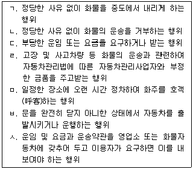
- ㄴ, ㄷ, ㄹ, ㅁ, ㅂ
- ㄱ, ㄴ, ㄷ, ㄹ, ㅁ, ㅂ
- ㄱ, ㄴ, ㄹ, ㅁ, ㅂ, ㅅ
- ㄴ, ㄷ, ㄹ, ㅁ, ㅂ, ㅅ
- ㄱ, ㄴ, ㄷ, ㄹ, ㅁ, ㅂ, ㅅ
(정답률: 알수없음)
63. 화물자동차 운수사업법령상 내용으로 옳은 것은?
- 견인형 특수자동차를 사용하여 컨테이너를 운송하는 운송사업자 또는 화물자동차를 직접 소유한 운송가맹사업자는 운임과 요금을 정하여 미리 국토해양부장관에게 신고하여야 한다.
- 화물의 멸실(滅失)ㆍ훼손(毁損) 또는 인도(引渡)의 지연으로 발생한 운송사업자의 손해배상 책임에 관하여는 민법을 준용한다.
- 화물이 인도기한이 지난 후 1개월 이내에 인도 되지 아니하면 그 화물은 멸실된 것으로 본다.
- 국토해양부장관은 화주가 분쟁조정을 요청하면 1개월 내에 그 사실을 확인하고 손해내용을 조사한 후 조정안을 작성하여야 한다.
- 국토해양부장관은 분쟁조정 업무를 소비자기본법에 따른 한국소비자원 또는 소비자단체에 위탁하여야 한다.
(정답률: 알수없음)
64. 화물자동차 운수사업법령상 화물자동차 운송사업의 양도ㆍ양수 등에 관한 설명으로 옳지 않은 것은?
- 운송사업자가 사망한 경우 상속인이 그 화물자동차 운송사업을 계속하려면 피상속인이 사망한 후 30일 이내에 국토해양부장관에게 신고하여야 한다.
- 운송사업자가 사망한 경우 상속인이 운송사업의 상속신고를 하면 피상속인이 사망한 날부터 신고한 날까지 피상속인에 대한 화물자동차 운송사업의 허가는 상속인에 대한 허가로 본다.
- 원칙적으로 화물자동차 운송사업의 양도ㆍ양수는 해당 화물자동차 운송사업의 전부를 대상으로 한다.
- 국토해양부장관은 화물자동차의 지역 간 수급 균형과 화물운송시장의 안정과 질서유지를 위하여 화물자동차 운송사업의 양도ㆍ양수와 합병을 제한할 수 있다.
- 국토해양부장관에게 양도ㆍ양수 신고 또는 합병신고를 하면 화물자동차 운송사업을 양수한 자는 화물자동차 운송사업을 양도한 자의 운송사업자로서의 지위를 승계하며, 합병으로 설립되거나 존속되는 법인은 합병으로 소멸되는 법인의 운송사업자로서의 지위를 승계한다.
(정답률: 알수없음)
65. 항만운송사업법령상 항만운송관련사업자의 미등록 항만에서의 일시적 영업에 관한 설명으로 옳은 것은?
- 항만운송관련사업자가 관련 법령에서 정하는 부득이한 사유로 미등록 항만에서 일시적 영업행위의 신고를 할 때에는 영업기간 등을 서면 또는 구두로 밝혀야 한다.
- 미등록 항만에서 일시적으로 영업행위를 하기 위하여 신고한 항만운송관련사업자는 등록된 항만에서 기존 수행하는 영업행위 전부를 할 수 있다.
- 항만운송관련사업자는 관련 법령에서 정하는 부득이한 사유로 미등록 항만에서 일시적으로 영업행위를 하려는 경우에는 미리 그 항만을 관할하는 지방해양항만청장에게 신고하여야 한다.
- 사업의 성질상 해당 항만의 사업자가 그 사업을 할 수 없는 경우에 미등록 항만에서의 일시적 영업행위를 하기 위해서는 해당 항만의 사업자의 사업등록을 취소하여야 한다.
- 미등록 항만에서의 일시적 영업은 타 항만에서 등록하여 영업행위를 하는 자는 할 수 없다.
(정답률: 알수없음)
66. 항만운송사업법령상 항만운송관련사업의 등록 및 신고기준에 관한 설명으로 옳은 것은? (단, 감경은 고려하지 않음)
- 1급지에서 항만용역업을 영위하기 위하여는 1억원 이상의 자본금과 20톤 이상의 통선 및 50톤 이상의 급수선을 필요로 한다.
- 2급지에서 선박급유업을 영위하기 위해서는 1억원 이상의 자본금과 총톤수 100톤 이상의 급유선을 필요로 한다.
- 1급지에서 컨테이너수리업을 영위하기 위해서는 5천만원 이상의 자본금과 100톤 이상의 통선이 필요하다.
- 2급지에서 물품공급업을 영위하기 위해서는 3천만원 이상의 자본금과 자동차 1대 이상이 필요하다.
- 3급지에서 선박급유업을 영위하기 위해서는 1억원 이상의 자본금과 100톤 이상의 급유선이 필요하다.
(정답률: 알수없음)
67. 항만운송사업법령상 항만운송관련사업이 아닌 것은?
- 통선(通船)으로 본선(本船)과 육지 간의 연락을 중계하는 행위를 하는 사업
- 본선을 경비(警備)하는 행위나 본선의 이안(離岸) 및 접안(接岸)을 보조하기 위하여 줄잡이 역무(役務)를 제공하는 행위를 하는 사업
- 선박의 오물 제거, 소독, 폐기물의 수집ㆍ운반, 화물 고정, 칠 등을 하는 행위를 하는 사업
- 선박의 유창(油艙) 청소를 하는 사업
- 선박용 연료유를 공급하는 사업
(정답률: 알수없음)
68. 유통산업발전법령상 행위주체의 연결이 옳은 것은?
- 전통상업보존구역의 지정 - 시ㆍ도지사
- 유통연수기관의 지정 - 중소기업청장
- 유통산업의 실태조사 - 시장ㆍ군수ㆍ구청장
- 공동집배송센터의 지정 - 지식경제부장관
- 물류설비 인증기관의 지정 - 국토해양부장관
(정답률: 알수없음)
69. 유통산업발전법령상 용어의 정의에 관한 설명으로 옳은 것은?
- 건축법시행령에 따른 수련시설이 상품판매를 위한 용역의 제공에 사용되는 경우 '매장'에 포함된다.
- 매장면적 합계가 1만제곱미터 이상인 때에는 상시 운영되는 매장이 아니더라도 '대규모점포'에 해당한다.
- 다른 업종이더라도 동일인이 여러 소매점포를 소유하여 직영하는 경우에는 '체인사업'에 해당한다.
- 상시운영되는 매장을 가진 점포를 두지 아니하고 다단계판매를 통해 상품을 판매하는 것은 '무점포판매'에 해당한다.
- '상점가'는 도매점포 또는 소매점포가 밀집된 지구를 말하며, 용역점포가 밀집된 지구는 포함되지 않는다.
(정답률: 알수없음)
70. 유통산업발전법령상 유통산업의 경쟁력 강화를 위한 제도에 관한 설명으로 옳지 않은 것은?
- 중소유통공동도매물류센터의 건립에 대한 행정적ㆍ재정적 지원 대상 업종은 한국표준산업 분류상 도매 및 상품중개업에 해당하는 업과 종합소매업에 해당하는 업이다.
- 지방자치단체가 중소유통공동도매물류센터를 건립하여 운영을 위탁하는 경우에는 당해 센터의 매출액의 1천분의 5 이내에서 시설 및 장비의 이용료를 징수할 수 있다.
- 상점가진흥조합의 조합원이 될 수 있는 자는 상점가에서 도매업ㆍ소매업ㆍ용역업 그밖의 영업을 영위하는 자로서 중소기업기본법상 중소기업자에 해당하는 자이어야 한다.
- 상점가진흥조합을 결성하기 위해서는 조합원 자격이 있는 자의 5분의 4 이상의 동의를 얻어야 한다.
- 상점가진흥조합의 구역은 다른 상점가진흥조합의 구역과 중복되어서는 아니된다.
(정답률: 알수없음)
71. 유통산업발전법령상 공동집배송센터의 지정 등에 관한 설명으로 옳은 것은?
- 공동집배송센터의 지정을 받고자 하는 자는 지식경제부장관에게 지정추천을 신청하여야 한다.
- 공동집배송센터의 지정을 받아 운영하는 사업자가 지정받은 공동집배송센터사업자를 변경하고자 하는 때에는 지식경제부장관에게 신고하여야 한다.
- 정보 및 주문처리시설은 공동집배송센터가 갖추어야 하는 주요시설에 해당한다.
- 공동집배송센터의 지정을 받은 날부터 정당한 사유없이 3년 이내에 시공을 하지 아니하는 경우에는 그 지정을 취소하여야 한다.
- 공동집배송센터사업자와 신탁계약을 체결한 신탁업자는 공동집배송센터사업자와 공동사업자의 지위를 가진다.
(정답률: 알수없음)
72. 유통산업발전법령상 대규모점포등에 관한 설명으로 옳은 것은?
- 전통상업보존구역이 아닌 지역에 준대규모점포를 개설하고자 하는 자는 등록하지 아니하고 개설할 수 있다.
- 대규모점포로서 대형마트는 용역의 제공장소를 포함하여 매장면적의 합계가 3천제곱미터 이상이어야 한다.
- 형법을 위반하여 징역형의 집행유예선고를 받고 그 유예기간 중에 있는 자는 대규모점포의 등록을 할 수 없다.
- 대규모점포의 개설자가 당해 점포를 무상으로 양도한 경우에는 양수인은 그 대규모점포개설자의 지위를 승계하지 못한다.
- 개설등록을 하고자 하는 대규모점포의 위치가 전문상가단지에 있을 때에는 등록을 제한하거나 조건을 붙일 수 있다.
(정답률: 알수없음)
73. 유통산업발전법령상 공동집배송센터개발촉진지구(이하 '촉진지구')에 관한 설명으로 옳지 않은 것은?
- 촉진지구로 지정되기 위한 요건의 하나로서, 부지의 면적은 10만제곱미터 이상이어야 한다.
- 시ㆍ도지사는 촉진지구의 지정을 지식경제부장관에게 요청할 수 있다.
- 항공법에 따른 공항 및 배후지에 대해서도 촉진지구를 지정할 수 있다.
- 촉진지구로 지정되기 위한 요건의 하나로서, 집배송시설 또는 공동집배송센터가 2 이상 설치되어 있어야 한다.
- 촉진지구안의 집배송시설을 공동집배송센터로 지정하기 위해서는 시ㆍ도지사의 지정추천이 있어야 한다.
(정답률: 알수없음)
74. 유통산업발전법령상 대규모점포에 대한 영업규제에 관한 설명으로 옳은 것은?
- 대규모점포에 대해 영업시간을 제한하거나 의무휴업을 명할 수 있는 권한은 시ㆍ도지사가 가진다.
- 대규모점포 중 영업규제의 대상은 대형마트로 등록된 대규모점포에 한정된다.
- 해당 지방자치단체의 조례로 정하는 경우, 오전 0시부터 오전 10시까지의 범위에서 영업시간의 제한을 확대할 수 있다.
- 의무휴업일은 매월 1일 이상 3일 이내의 범위에서 지정할 수 있다.
- 의무휴업일 지정을 통한 의무휴업을 명하기 위해서는 미리 지식경제부장관의 승인을 받아야 한다.
(정답률: 알수없음)
75. 유통산업발전법령상 과태료 부과의 대상에 해당하는 자는?
- 변작된 유통표준전자문서를 사용하려다 미수에 그친 자
- 개설등록을 하지 아니하고 대규모점포를 개설한 자
- 대규모점포에 대한 의무휴업 명령을 위반한 자
- 유통표준전자문서를 의무기간 동안 보관하지 아니한 자
- 법령에 위반하여 컴퓨터등 정보처리조직의 파일에 기록된 유통정보를 공개한 자
(정답률: 알수없음)
76. 철도사업법령상 철도사업에 관한 설명으로 옳지 않은 것은?
- 철도사업자가 운임ㆍ요금을 변경하려는 경우에는 국토해양부장관에게 신고하여야 한다.
- 철도사업자가 여객열차의 운행구간을 변경하려는 경우에는 국토해양부장관의 인가를 받아야 한다.
- 철도사업자가 다른 철도사업자와 합병하려는 경우에는 국토해양부장관의 인가를 받아야 한다.
- 철도사업자가 그 사업의 일부를 폐업하려는 경우에는 국토해양부장관의 허가를 받아야 한다.
- 철도사업자가 철도사업약관을 변경하려는 경우에는 국토해양부장관의 인가를 받아야 한다.
(정답률: 알수없음)
77. 철도사업법령상 철도사업자에 관한 설명으로 옳지 않은 것은?
- 철도사업자는 천재지변 등 불가피한 사유가 없는 한 국토해양부장관이 지정하는 날 또는 기간에 운송을 시작하여야 할 의무가 있다.
- 철도사업자는 철도사업의 경영상 필요하다고 인정되는 경우 별도의 신고 없이도 일정한 기간과 대상을 정하여 운임ㆍ요금을 감면할 수 있다.
- 철도사업자는 여객 또는 화물 운송에 부수하여 우편물과 신문 등을 운송할 수 있다.
- 인가를 받아 철도사업을 양수한 자는 철도사업을 양도한 자의 철도사업자로서의 지위를 승계한다.
- 국토해양부장관은 철도사업자가 사업면허에 부가된 부담을 위반한 경우, 사업면허를 취소하여야 한다.
(정답률: 알수없음)
78. 철도사업법령상 철도사업자에 대한 사업 개선 명령의 사항에 해당하지 않는 것은?
- 운임ㆍ요금의 인하
- 철도사업약관의 변경
- 철도차량 및 철도사고에 관한 손해보상을 위한 보험에의 가입
- 사업계획의 변경
- 공동운수협정의 체결
(정답률: 알수없음)
79. 농수산물유통 및 가격안정에 관한 법령상 유통산업발전법의 규정이 적용되지 않는 시장 또는 사업장이 아닌 것은?
- 중앙도매시장
- 농수산물공판장
- 민영농수산물도매시장
- 총매출액 중 농수산물의 매출액 비중이 51퍼센트 이상인 임시시장
- 농수산물종합유통센터
(정답률: 알수없음)
80. 농수산물유통 및 가격안정에 관한 법령상 농수산물도매시장(이하 '도매시장')에 관한 설명으로 옳은 것은?
- 산지유통인으로 등록한 자는 등록된 도매시장에서 농수산물의 출하업무 외에 중개업무를 병행할 수 있다.
- 도매시장에서 도매시장법인이 하는 도매는 법령이 정한 특별한 사유가 없는 한 출하자로부터 매수하여 도매하여야 한다.
- 중도매인은 도매시장법인이 상장한 농수산물은 거래할 수 없다.
- 시장도매인은 도매시장에서 농수산물을 매수 또는 위탁받아 도매할 수 있으나, 매매를 중개하는 것은 금지된다.
- 시장도매인은 해당 도매시장의 도매시장법인ㆍ중도매인에게 농수산물을 판매하지 못한다.
(정답률: 0%)